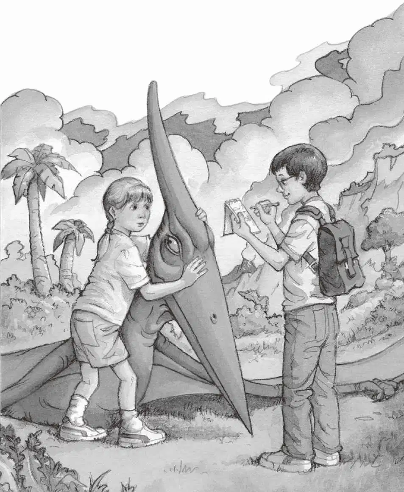

安妮朝无齿翼龙伸出手，杰克吓得倒吸了一口冷气。
“哦，不要。”他想。安妮总是想跟动物交朋友，但这次也太冒险了。
“别跟它靠得太近，安妮！”杰克喊。
安妮摸了摸无齿翼龙的冠，又摸了摸它的脖子，还跟它说了几句话。
“她到底在说些什么呢？”杰克很想知道。
他深深吸了口气，想：“好吧，我也下去看看吧，仔细研究研究无齿翼龙也不错。我可以像科学家那样做点儿笔记。”
杰克顺着绳梯爬下去，到了地面上。这时，他跟无齿翼龙之间只有几米的距离。
无齿翼龙盯着杰克。它的眼睛亮晶晶的，充满警觉。
“它身上软软的，摸上去跟亨利一样，杰克。”安妮说。
杰克哼了一声，说：“它不是狗，安妮。”
“你摸摸它嘛，杰克。”安妮又说。
杰克没有动弹。
安妮鼓励他说：“别想太多，做就对啦。”
杰克朝前跨了一步。他非常小心地伸出手，在无齿翼龙脖子上拂了一下。
“真有趣啊。”杰克想。无齿翼龙的皮肤上覆着一层薄薄的绒毛。
“很软，是不是？”安妮问。
杰克把手伸进背包，掏出一支铅笔和一个笔记本。
他写道：
“你在做什么呀？”安妮问。
“在做笔记。”杰克说，“我们恐怕是全世界最先见到无齿翼龙的人……真正的、活着的无齿翼龙。”
杰克又抬头看着无齿翼龙。它头顶上那个骨质的冠，比杰克的胳膊还要长呢。
“不知道它聪不聪明。”杰克说。
“非常聪明。”安妮肯定地说。
“不见得吧，它的脑子可能跟一粒蚕豆差不多大。”
“不，它真的很聪明，我能感觉得到。”安妮说，“我要叫它亨利。”
杰克在笔记本上写道：
杰克又看着恐龙说：“也许它是个变种。”
无齿翼龙把脑袋一歪。
安妮大笑起来：“它才不是变种呢，杰克。”
“那它在这儿做什么呢？这是什么地方？”杰克问。
安妮把身体凑近无齿翼龙。“你知道我们这是在哪儿吗，亨利？”她轻声问。
无齿翼龙的两只眼睛盯着安妮，长长的嘴巴一张一合，像一把巨大的剪刀。
“你是想跟我说话吗，亨利？”安妮又问。
“算了，安妮，它不会说话。”杰克说着在笔记本上写道：

“我们是不是来到了很久以前，亨利？”安妮问，“这是很久以前的一个地方吗？”
突然，安妮倒吸一口冷气，喊道：“杰克！”
杰克抬起头来。
安妮指着小山，山顶上正站着一只巨大的恐龙。